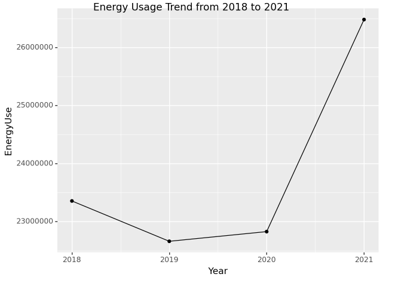
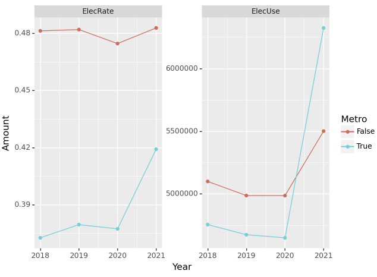
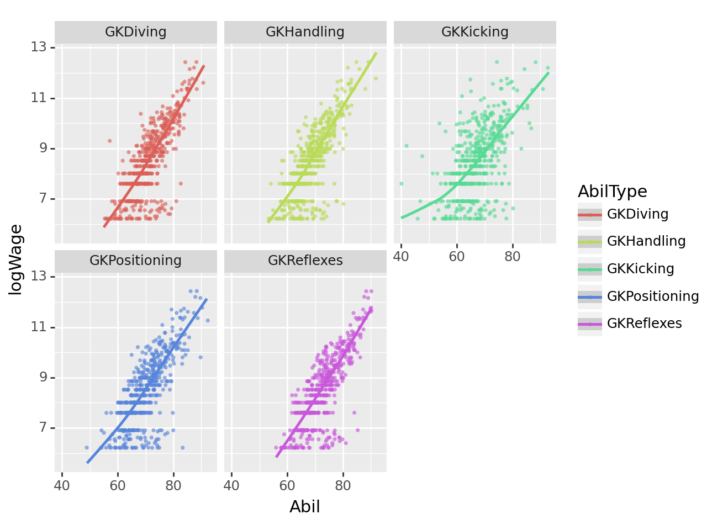
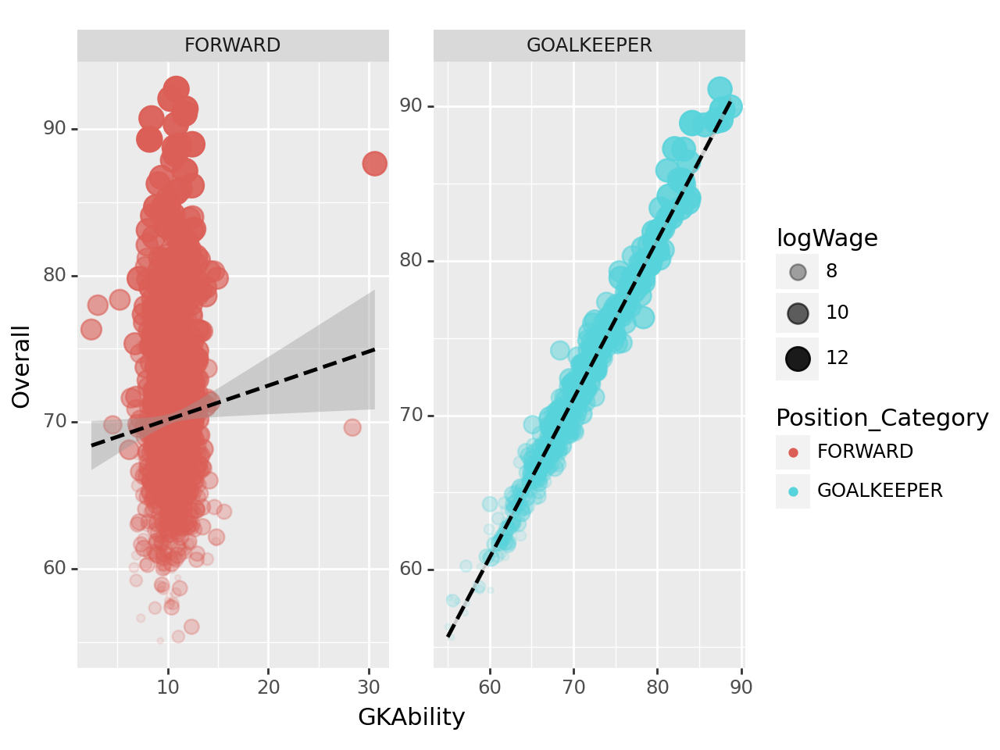
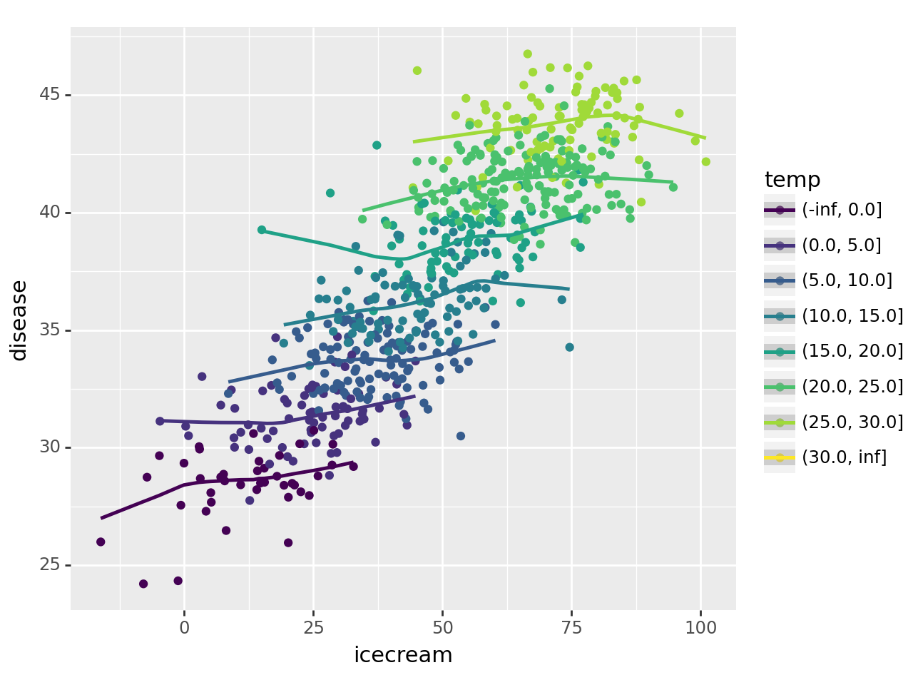

import numpy as np
import pandas as pd
import matplotlib.pyplot as plt
import seaborn as sns
from plotnine import *
#---#
import PIL
import io
import requests
import cv2 1. 에너지사용량 – 80점
아래는 2019년 서울의 에너지사용량을 불러오는 예시코드이다.
pd.read_csv('https://raw.githubusercontent.com/guebin/DV2022/main/posts/Energy/Seoul2019.csv')| 지역 | 건물동수 | 연면적 | 에너지사용량(TOE)/전기 | 에너지사용량(TOE)/도시가스 | 에너지사용량(TOE)/지역난방 | |
|---|---|---|---|---|---|---|
| 0 | 종로구 | 17,851 | 9,204,140 | 63,492 | 76,653 | 799 |
| 1 | 중구 | 10,383 | 10,078,848 | 79,223 | 68,210 | 497 |
| 2 | 용산구 | 17,138 | 10,756,612 | 51,229 | 79,805 | 11,128 |
| 3 | 성동구 | 13,980 | 11,804,313 | 59,832 | 99,986 | 0 |
| 4 | 광진구 | 21,556 | 12,272,738 | 68,756 | 123,447 | 0 |
| 5 | 동대문구 | 21,794 | 12,664,554 | 65,913 | 111,420 | 0 |
| 6 | 중랑구 | 23,950 | 15,182,802 | 59,370 | 109,284 | 7,442 |
| 7 | 성북구 | 27,112 | 15,938,807 | 77,007 | 148,376 | 0 |
| 8 | 강북구 | 23,334 | 9,458,987 | 47,731 | 100,045 | 0 |
| 9 | 도봉구 | 13,168 | 10,644,704 | 44,985 | 90,379 | 5,268 |
| 10 | 노원구 | 9,704 | 17,197,086 | 77,010 | 94,340 | 50,859 |
| 11 | 은평구 | 25,200 | 14,735,131 | 75,914 | 130,159 | 14,370 |
| 12 | 서대문구 | 17,651 | 12,559,425 | 65,164 | 111,542 | 6,330 |
| 13 | 마포구 | 18,844 | 15,024,186 | 92,453 | 114,931 | 20,148 |
| 14 | 양천구 | 14,690 | 15,428,339 | 70,721 | 82,857 | 49,258 |
| 15 | 강서구 | 20,446 | 20,641,866 | 86,809 | 128,786 | 35,896 |
| 16 | 구로구 | 17,204 | 13,509,894 | 59,916 | 120,457 | 2,963 |
| 17 | 금천구 | 12,135 | 7,420,441 | 34,791 | 69,814 | 732 |
| 18 | 영등포구 | 18,133 | 14,914,027 | 87,480 | 114,238 | 13,531 |
| 19 | 동작구 | 20,102 | 13,612,946 | 66,811 | 132,285 | 899 |
| 20 | 관악구 | 26,460 | 14,997,859 | 85,416 | 158,543 | 0 |
| 21 | 서초구 | 12,856 | 21,560,285 | 135,491 | 121,437 | 38,866 |
| 22 | 강남구 | 16,129 | 29,961,585 | 180,121 | 149,045 | 83,459 |
| 23 | 송파구 | 19,331 | 26,573,343 | 139,117 | 143,601 | 71,954 |
| 24 | 강동구 | 16,636 | 15,048,315 | 70,341 | 121,931 | 11,921 |
에너지 사용량은 2018년부터 2021년까지의 기간 동안 서울, 부산 등 여러 지역에 대해 정리되어 있으며, 아래 주소 형식으로 저장되어 있다.
https://raw.githubusercontent.com/guebin/DV2022/main/posts/Energy/Seoul2018.csv
https://raw.githubusercontent.com/guebin/DV2022/main/posts/Energy/Seoul2019.csv
https://raw.githubusercontent.com/guebin/DV2022/main/posts/Energy/Seoul2020.csv
https://raw.githubusercontent.com/guebin/DV2022/main/posts/Energy/Seoul2021.csv
...
https://raw.githubusercontent.com/guebin/DV2022/main/posts/Energy/Busan2018.csv
https://raw.githubusercontent.com/guebin/DV2022/main/posts/Energy/Busan2019.csv
https://raw.githubusercontent.com/guebin/DV2022/main/posts/Energy/Busan2020.csv
https://raw.githubusercontent.com/guebin/DV2022/main/posts/Energy/Busan2021.csv아래의 url, prov를 참고하여 모든 자료를 불러온 뒤 pd.concat()을 이용하여 하나의 df로 합쳐라.
url = 'https://raw.githubusercontent.com/guebin/DV2022/main/posts/Energy/{}.csv'
prov = ['Seoul', 'Busan', 'Daegu', 'Incheon',
'Gwangju', 'Daejeon', 'Ulsan', 'Sejongsi',
'Gyeonggi-do', 'Gangwon-do', 'Chungcheongbuk-do',
'Chungcheongnam-do', 'Jeollabuk-do', 'Jeollanam-do',
'Gyeongsangbuk-do', 'Gyeongsangnam-do', 'Jeju-do']
years = ['2018', '2019', '2020','2021']
dfs = []
for region in prov:
for year in years:
region_year_url = url.format(f"{region}{year}")
df = pd.read_csv(region_year_url)
df.insert(0, '년도', int(year))
df.insert(1, '시도', region)
dfs.append(df)result_df = pd.concat(dfs, ignore_index=True)result_df| 년도 | 시도 | 지역 | 건물동수 | 연면적 | 에너지사용량(TOE)/전기 | 에너지사용량(TOE)/도시가스 | 에너지사용량(TOE)/지역난방 | |
|---|---|---|---|---|---|---|---|---|
| 0 | 2018 | Seoul | 종로구 | 17,929 | 9,141,777 | 64,818 | 82,015 | 111 |
| 1 | 2018 | Seoul | 중구 | 10,598 | 10,056,233 | 81,672 | 75,260 | 563 |
| 2 | 2018 | Seoul | 용산구 | 17,201 | 10,639,652 | 52,659 | 85,220 | 12,043 |
| 3 | 2018 | Seoul | 성동구 | 14,180 | 11,631,770 | 60,559 | 107,416 | 0 |
| 4 | 2018 | Seoul | 광진구 | 21,520 | 12,054,796 | 70,609 | 130,308 | 0 |
| ... | ... | ... | ... | ... | ... | ... | ... | ... |
| 995 | 2019 | Jeju-do | 서귀포시 | 34,729 | 7,233,931 | 34,641 | 1,306 | 0 |
| 996 | 2020 | Jeju-do | 제주시 | 66,504 | 19,819,923 | 99,212 | 22,179 | 0 |
| 997 | 2020 | Jeju-do | 서귀포시 | 34,880 | 7,330,040 | 35,510 | 1,639 | 0 |
| 998 | 2021 | Jeju-do | 제주시 | 67,053 | 20,275,738 | 103,217 | 25,689 | 0 |
| 999 | 2021 | Jeju-do | 서귀포시 | 35,230 | 7,512,206 | 37,884 | 2,641 | 0 |
1000 rows × 8 columns
의미상 숫자형이지만 문자형으로 입력이된 자료를 모두 전처리하고, 아래의 딕셔너리를 이용하여 열의 이름을 변환하라.
name_dict = {
'년도': 'Year',
'시도': 'Prov',
'지역': 'Reg',
'건물동수': 'BldgCount',
'연면적': 'Area',
'에너지사용량(TOE)/전기': 'Elec',
'에너지사용량(TOE)/도시가스': 'Gas',
'에너지사용량(TOE)/지역난방': 'Heat'
}result_df.dtypes년도 int64
시도 object
지역 object
건물동수 object
연면적 object
에너지사용량(TOE)/전기 object
에너지사용량(TOE)/도시가스 object
에너지사용량(TOE)/지역난방 object
dtype: objectresult_df.rename(columns=name_dict, inplace=True)result_df| Year | Prov | Reg | BldgCount | Area | Elec | Gas | Heat | |
|---|---|---|---|---|---|---|---|---|
| 0 | 2018 | Seoul | 종로구 | 17,929 | 9,141,777 | 64,818 | 82,015 | 111 |
| 1 | 2018 | Seoul | 중구 | 10,598 | 10,056,233 | 81,672 | 75,260 | 563 |
| 2 | 2018 | Seoul | 용산구 | 17,201 | 10,639,652 | 52,659 | 85,220 | 12,043 |
| 3 | 2018 | Seoul | 성동구 | 14,180 | 11,631,770 | 60,559 | 107,416 | 0 |
| 4 | 2018 | Seoul | 광진구 | 21,520 | 12,054,796 | 70,609 | 130,308 | 0 |
| ... | ... | ... | ... | ... | ... | ... | ... | ... |
| 995 | 2019 | Jeju-do | 서귀포시 | 34,729 | 7,233,931 | 34,641 | 1,306 | 0 |
| 996 | 2020 | Jeju-do | 제주시 | 66,504 | 19,819,923 | 99,212 | 22,179 | 0 |
| 997 | 2020 | Jeju-do | 서귀포시 | 34,880 | 7,330,040 | 35,510 | 1,639 | 0 |
| 998 | 2021 | Jeju-do | 제주시 | 67,053 | 20,275,738 | 103,217 | 25,689 | 0 |
| 999 | 2021 | Jeju-do | 서귀포시 | 35,230 | 7,512,206 | 37,884 | 2,641 | 0 |
1000 rows × 8 columns
num_var = {'BldgCount', 'Area', 'Elec', 'Gas', 'Heat'}for i in num_var:
result_df[i] = result_df[i].apply(lambda x: x if x == 0 else str(x).replace(',', ''))result_df.dtypesYear int64
Prov object
Reg object
BldgCount object
Area object
Elec object
Gas object
Heat object
dtype: objectfor i in num_var:
result_df[i] = pd.to_numeric(result_df[i], errors='coerce')result_df.dtypesYear int64
Prov object
Reg object
BldgCount int64
Area int64
Elec int64
Gas int64
Heat int64
dtype: objectresult_df| Year | Prov | Reg | BldgCount | Area | Elec | Gas | Heat | |
|---|---|---|---|---|---|---|---|---|
| 0 | 2018 | Seoul | 종로구 | 17929 | 9141777 | 64818 | 82015 | 111 |
| 1 | 2018 | Seoul | 중구 | 10598 | 10056233 | 81672 | 75260 | 563 |
| 2 | 2018 | Seoul | 용산구 | 17201 | 10639652 | 52659 | 85220 | 12043 |
| 3 | 2018 | Seoul | 성동구 | 14180 | 11631770 | 60559 | 107416 | 0 |
| 4 | 2018 | Seoul | 광진구 | 21520 | 12054796 | 70609 | 130308 | 0 |
| ... | ... | ... | ... | ... | ... | ... | ... | ... |
| 995 | 2019 | Jeju-do | 서귀포시 | 34729 | 7233931 | 34641 | 1306 | 0 |
| 996 | 2020 | Jeju-do | 제주시 | 66504 | 19819923 | 99212 | 22179 | 0 |
| 997 | 2020 | Jeju-do | 서귀포시 | 34880 | 7330040 | 35510 | 1639 | 0 |
| 998 | 2021 | Jeju-do | 제주시 | 67053 | 20275738 | 103217 | 25689 | 0 |
| 999 | 2021 | Jeju-do | 서귀포시 | 35230 | 7512206 | 37884 | 2641 | 0 |
1000 rows × 8 columns
올바르게 정리된 데이터프레임의 예시는 아래와 같다.

 ##
## (1) 에너지 사용 추세 – 10점
2018년부터 2021년까지 에너지사용량을 dot-connected plot으로 시각화 하라.
시각화 예시

세부지침
1. plotnine으로 생성된 fig[1]에 .draw()메소드를 사용하여 matplotlib.figure.Figure 자료형으로 변환할것
[1] type이 plotnine.ggplot.ggplot 인 오브젝트
result_df.groupby('Year')['Elec', 'Gas', 'Heat'].sum().reset_index().assign(EnergyUse=lambda x: x['Elec'] + x['Gas'] + x['Heat'])FutureWarning: Indexing with multiple keys (implicitly converted to a tuple of keys) will be deprecated, use a list instead.| Year | Elec | Gas | Heat | EnergyUse | |
|---|---|---|---|---|---|
| 0 | 2018 | 9855181 | 11456170 | 2044236 | 23355587 |
| 1 | 2019 | 9661524 | 10990282 | 2009458 | 22661264 |
| 2 | 2020 | 9636650 | 11109471 | 2081729 | 22827850 |
| 3 | 2021 | 11824724 | 12374728 | 2279804 | 26479256 |
p = ggplot(result_df.groupby('Year')['Elec','Gas','Heat'].sum().reset_index().assign(EnergyUse=lambda x: x['Elec'] + x['Gas'] + x['Heat']), aes(x="Year", y="EnergyUse")) + geom_point() + geom_line()
p = p + labs(title="Energy Usage Trend from 2018 to 2021")
p.draw()FutureWarning: Indexing with multiple keys (implicitly converted to a tuple of keys) will be deprecated, use a list instead.(2) 에너지 종류별 사용 추세 – 10점
2018년부터 2021년까지 에너지사용량을 dot-connected plot으로 시각화 하라. 에너지의 유형은 색상으로 구분하라.
시각화 예시

세부지침
1 geom_point의 color와 shape을 EneryType으로 설정할 것.
2 geom_line의 color와 linetype을 EneryType으로 설정할 것
p = ggplot(pd.melt(result_df.groupby('Year')['Elec', 'Gas', 'Heat'].sum().reset_index(),\
id_vars=['Year'], var_name='EnergyType', value_name='EnergyUse'), aes(x='Year', y='EnergyUse', color='EnergyType')) +\
geom_point() + geom_line()
p = p + labs(title="Energy Usage Trend from 2018 to 2021")
p.draw()FutureWarning: Indexing with multiple keys (implicitly converted to a tuple of keys) will be deprecated, use a list instead.(3) 2020년 대비 2021년의 전기에너지 사용량 증가 – 20점
2020년 대비 2021년의 전기에너지 사용량이 증가한 상위 5개의 지역을 아래와 같이 시각화하라.
시각화 예시
세부지침
1. 2020년 대비 2021년의 전기에너지 사용 증가량은 아래와 같이 구한다.
\[\text{서울의 전기에너지 사용 증가량} = \frac{\text{2021년 서울 전기에너지 사용량}-\text{2020년 서울 전기에너지 사용량}}{\text{2020년 서울 전기에너지 사용량}}\]
- \(\text{서울의 2021년 전기에너지 사용 증가량}= \text{2021년 강남구의 전기에너지 사용량} + \dots + \text{2021년 중랑구의 전기에너지 사용량}\)
- \(\text{서울의 2020년 전기에너지 사용 증가량}= \text{2020년 강남구의 전기에너지 사용량} + \dots + \text{2020년 중랑구의 전기에너지 사용량}\)
pd.DataFrame([result_df.query("Year == 2020 or Year == 2021").groupby(['Prov','Year'])['Elec'].sum().unstack().reset_index().iloc[:,0],\
result_df.query("Year == 2020 or Year == 2021").groupby(['Prov','Year'])['Elec'].sum().unstack().diff(axis=1).reset_index().iloc[:,2]/ \
result_df.query("Year == 2020 or Year == 2021").groupby(['Prov','Year'])['Elec'].sum().unstack().reset_index().iloc[:,1]]).transpose().rename(columns={'Unnamed 0': 'ElectricUseInc'})| Prov | ElectricUseInc | |
|---|---|---|
| 0 | Busan | 0.735943 |
| 1 | Chungcheongbuk-do | 0.012845 |
| 2 | Chungcheongnam-do | 0.032079 |
| 3 | Daegu | 0.00882 |
| 4 | Daejeon | 0.024726 |
| 5 | Gangwon-do | 0.012737 |
| 6 | Gwangju | 0.016294 |
| 7 | Gyeonggi-do | 0.036217 |
| 8 | Gyeongsangbuk-do | 0.01743 |
| 9 | Gyeongsangnam-do | 0.004493 |
| 10 | Incheon | 0.033449 |
| 11 | Jeju-do | 0.047349 |
| 12 | Jeollabuk-do | 0.015601 |
| 13 | Jeollanam-do | 0.009638 |
| 14 | Sejongsi | 0.049893 |
| 15 | Seoul | 0.82507 |
| 16 | Ulsan | 0.013237 |
2. 전기에너지의 사용량이 증가한 상위5개의 지역 중 가장 많이 증가한 2개의 지역은 색깔과 투명도로 하이라이팅 한다. (구체적 코드는 hint를 참고할 것)
힌트
- 정리된 자료의 형태는 아래와 같아야 한다.

- 그림안에 text를 넣기위해서 geom_text를 시용한다. 위의 데이터가 정리되었다는 전제하에 구체적인 시각화 코드는 아래와 같다.
fig = ggplot(tidydata.query('Rank<5'))
col = geom_col(aes(x='Rank',y='ElecUseInc',fill='Top2',alpha='Top2'))
text = geom_text(aes(x='Rank',y='ElecUseInc',label='Prov'))
fig + col + text + scale_alpha_manual(values={True: 1, False: 0.2})pd.DataFrame([result_df.query("Year == 2020 or Year == 2021").groupby(['Prov','Year'])['Elec'].sum().unstack().reset_index().iloc[:,0],\
result_df.query("Year == 2020 or Year == 2021").groupby(['Prov','Year'])['Elec'].sum().unstack().diff(axis=1).reset_index().iloc[:,2]/ \
result_df.query("Year == 2020 or Year == 2021").groupby(['Prov','Year'])['Elec'].sum().unstack().reset_index().iloc[:,1]]).transpose().rename(columns={'Unnamed 0': 'ElectricUseInc'}).\
assign(Rank=lambda x: x['ElectricUseInc'].rank(ascending=False), Top2=lambda x: x['ElectricUseInc'].rank(ascending=False) <= 2).sort_values(by='Rank')| Prov | ElectricUseInc | Rank | Top2 | |
|---|---|---|---|---|
| 15 | Seoul | 0.82507 | 1.0 | True |
| 0 | Busan | 0.735943 | 2.0 | True |
| 14 | Sejongsi | 0.049893 | 3.0 | False |
| 11 | Jeju-do | 0.047349 | 4.0 | False |
| 7 | Gyeonggi-do | 0.036217 | 5.0 | False |
| 10 | Incheon | 0.033449 | 6.0 | False |
| 2 | Chungcheongnam-do | 0.032079 | 7.0 | False |
| 4 | Daejeon | 0.024726 | 8.0 | False |
| 8 | Gyeongsangbuk-do | 0.01743 | 9.0 | False |
| 6 | Gwangju | 0.016294 | 10.0 | False |
| 12 | Jeollabuk-do | 0.015601 | 11.0 | False |
| 16 | Ulsan | 0.013237 | 12.0 | False |
| 1 | Chungcheongbuk-do | 0.012845 | 13.0 | False |
| 5 | Gangwon-do | 0.012737 | 14.0 | False |
| 13 | Jeollanam-do | 0.009638 | 15.0 | False |
| 3 | Daegu | 0.00882 | 16.0 | False |
| 9 | Gyeongsangnam-do | 0.004493 | 17.0 | False |
p = ggplot(pd.DataFrame([result_df.query("Year == 2020 or Year == 2021").groupby(['Prov','Year'])['Elec'].sum().unstack().reset_index().iloc[:,0],\
result_df.query("Year == 2020 or Year == 2021").groupby(['Prov','Year'])['Elec'].sum().unstack().diff(axis=1).reset_index().iloc[:,2]/ \
result_df.query("Year == 2020 or Year == 2021").groupby(['Prov','Year'])['Elec'].sum().unstack().reset_index().iloc[:,1]]).transpose().rename(columns={'Unnamed 0': 'ElectricUseInc'}).\
assign(Rank=lambda x: x['ElectricUseInc'].rank(ascending=False), Top2=lambda x: x['ElectricUseInc'].rank(ascending=False) <= 2).sort_values(by='Rank').head(5).\
astype({'ElectricUseInc': 'float'}) ,\
aes(x='Rank', y='ElectricUseInc', color='Top2', fill='Top2')) +\
scale_alpha_manual(values={True: 1, False: 0.5})+\
geom_bar(aes(alpha='Top2'),stat='identity')+\
geom_text(aes(label='Prov'), position='identity', size=8, color='black') +\
scale_y_continuous(breaks=[0, 0.2, 0.4, 0.6, 0.8])
p.draw()(4) 건물당 에너지 소비량: 연도별 상위 15구 비교 – 20점
건물당 에너지소비량이 가장 큰 15개의 구를 연도별로 시각화하라.
시각화 예시

세부지침
1. 건물당 에너지 사용량(=EUB)을 아래와 같은 방식으로 구할 것
\[\text{EUB}_{강남구,2018}=\frac{\text{강남구의 2018년도 전기에너지 사용량}+ \text{강남구의 2018년도 도시가스 사용량} +\text{강남구의 2018년도 지역난방 사용량}}{\text{강남구의 2018년도 건물동수}}\]
2. 연도별로 EUB가 높은 15개의 구를 정렬할 것. (따라서 매년도마다 순위가 다를수 있음)
result_df.groupby(['Year','Prov','Reg']).sum().reset_index().assign(EUB = lambda x: (x['Elec']+x['Gas']+x['Heat'])/x['BldgCount'],\
Rank = lambda x: x.groupby('Year')['EUB'].rank(ascending=False)).sort_values(by=['Year','Rank']).\
query('Rank<=15').head()| Year | Prov | Reg | BldgCount | Area | Elec | Gas | Heat | EUB | Rank | |
|---|---|---|---|---|---|---|---|---|---|---|
| 101 | 2018 | Gyeonggi-do | 수지구 | 5493 | 15579191 | 61632 | 21980 | 87643 | 31.176952 | 1.0 |
| 177 | 2018 | Incheon | 연수구 | 5982 | 15321162 | 70421 | 55642 | 47047 | 28.938482 | 2.0 |
| 108 | 2018 | Gyeonggi-do | 영통구 | 5904 | 13247277 | 62519 | 43259 | 64963 | 28.919546 | 3.0 |
| 98 | 2018 | Gyeonggi-do | 분당구 | 7279 | 21232943 | 87822 | 39088 | 76226 | 27.907130 | 4.0 |
| 220 | 2018 | Seoul | 강남구 | 16197 | 29790359 | 184017 | 162452 | 89631 | 26.924739 | 5.0 |
p = ggplot(result_df.groupby(['Year','Prov','Reg']).sum().reset_index().assign(EUB = lambda x: (x['Elec']+x['Gas']+x['Heat'])/x['BldgCount'],\
Rank = lambda x: x.groupby('Year')['EUB'].rank(ascending=False)).sort_values(by=['Year','Rank']).\
query('Rank<=15'),\
aes(x = 'Rank',y='EUB' , color='Prov',fill='Prov')) +\
geom_bar(stat='identity',width=0.7) +\
facet_wrap('Year')
p.draw()(5) 수도권과 비수도권의 전기 에너지 사용량 및 사용 비율 – 20점
수도권과 비수도권의 전기에너지 사용량 및 사용비율을 계산하고 시각화 하라.
시각화예시

세부지침
1. ['Seoul','Gyeonggi-do','Incheon']은 수도권으로 그 외의 지역은 비수도권으로 분리한다.
2. 수도권의 전기에너지 사용비율은 아래와 같이 구한다.
\[\text{2018년 수도권의 전기에너지 사용비율} = \frac{\text{2018년 수도권의 전기 사용량}}{\text{2018년 수도권의 전기 사용량}+\text{2018년 수도권의 도시가스 사용량}+\text{2018년 수도권의 지역난방 사용량}}\]
3. facet_wrap 사용시 scales='free' 옵션을 사용할 것
pd.melt(result_df.assign(Metro=result_df['Prov'].isin(['Seoul', 'Gyeonggi-do', 'Incheon'])).\
groupby(['Year','Metro']).sum().reset_index().assign(ElecUse = lambda x: (x['Elec']+x['Gas']+x['Heat']),\
ElecRate = lambda x: x['Elec']/(x['Elec']+x['Gas']+x['Heat'])).\
iloc[:, [0, 1, 7, 8]],id_vars=['Year','Metro'], value_name='Amount')FutureWarning: The default value of numeric_only in DataFrameGroupBy.sum is deprecated. In a future version, numeric_only will default to False. Either specify numeric_only or select only columns which should be valid for the function.| Year | Metro | variable | Amount | |
|---|---|---|---|---|
| 0 | 2018 | False | ElecUse | 1.059633e+07 |
| 1 | 2018 | True | ElecUse | 1.275926e+07 |
| 2 | 2019 | False | ElecUse | 1.034739e+07 |
| 3 | 2019 | True | ElecUse | 1.231388e+07 |
| 4 | 2020 | False | ElecUse | 1.050697e+07 |
| 5 | 2020 | True | ElecUse | 1.232088e+07 |
| 6 | 2021 | False | ElecUse | 1.139371e+07 |
| 7 | 2021 | True | ElecUse | 1.508554e+07 |
| 8 | 2018 | False | ElecRate | 4.812637e-01 |
| 9 | 2018 | True | ElecRate | 3.727139e-01 |
| 10 | 2019 | False | ElecRate | 4.819473e-01 |
| 11 | 2019 | True | ElecRate | 3.796228e-01 |
| 12 | 2020 | False | ElecRate | 4.746019e-01 |
| 13 | 2020 | True | ElecRate | 3.774099e-01 |
| 14 | 2021 | False | ElecRate | 4.827995e-01 |
| 15 | 2021 | True | ElecRate | 4.191991e-01 |
p = ggplot(pd.melt(result_df.assign(Metro=result_df['Prov'].isin(['Seoul', 'Gyeonggi-do', 'Incheon'])).\
groupby(['Year','Metro']).sum().reset_index().assign(ElecUse = lambda x: (x['Elec']+x['Gas']+x['Heat']),\
ElecRate = lambda x: x['Elec']/(x['Elec']+x['Gas']+x['Heat'])).\
iloc[:, [0, 1, 7, 8]],id_vars=['Year','Metro'], value_name='Amount'),aes(x='Year',y='Amount',color='Metro')) +\
geom_line() + geom_point() + \
facet_wrap('variable', scales = "free_y")
p.draw()FutureWarning: The default value of numeric_only in DataFrameGroupBy.sum is deprecated. In a future version, numeric_only will default to False. Either specify numeric_only or select only columns which should be valid for the function.2. FIFA – 90점
아래는 FIFA22 자료를 불러오는 코드이다.
df = pd.read_csv('https://raw.githubusercontent.com/guebin/DV2021/master/_notebooks/2021-10-25-FIFA22_official_data.csv').drop(['Loaned From','Marking'],axis=1).dropna()
df.head()| ID | Name | Age | Photo | Nationality | Flag | Overall | Potential | Club | Club Logo | ... | SlidingTackle | GKDiving | GKHandling | GKKicking | GKPositioning | GKReflexes | Best Position | Best Overall Rating | Release Clause | DefensiveAwareness | |
|---|---|---|---|---|---|---|---|---|---|---|---|---|---|---|---|---|---|---|---|---|---|
| 0 | 212198 | Bruno Fernandes | 26 | https://cdn.sofifa.com/players/212/198/22_60.png | Portugal | https://cdn.sofifa.com/flags/pt.png | 88 | 89 | Manchester United | https://cdn.sofifa.com/teams/11/30.png | ... | 65.0 | 12.0 | 14.0 | 15.0 | 8.0 | 14.0 | CAM | 88.0 | €206.9M | 72.0 |
| 1 | 209658 | L. Goretzka | 26 | https://cdn.sofifa.com/players/209/658/22_60.png | Germany | https://cdn.sofifa.com/flags/de.png | 87 | 88 | FC Bayern München | https://cdn.sofifa.com/teams/21/30.png | ... | 77.0 | 13.0 | 8.0 | 15.0 | 11.0 | 9.0 | CM | 87.0 | €160.4M | 74.0 |
| 2 | 176580 | L. Suárez | 34 | https://cdn.sofifa.com/players/176/580/22_60.png | Uruguay | https://cdn.sofifa.com/flags/uy.png | 88 | 88 | Atlético de Madrid | https://cdn.sofifa.com/teams/240/30.png | ... | 38.0 | 27.0 | 25.0 | 31.0 | 33.0 | 37.0 | ST | 88.0 | €91.2M | 42.0 |
| 3 | 192985 | K. De Bruyne | 30 | https://cdn.sofifa.com/players/192/985/22_60.png | Belgium | https://cdn.sofifa.com/flags/be.png | 91 | 91 | Manchester City | https://cdn.sofifa.com/teams/10/30.png | ... | 53.0 | 15.0 | 13.0 | 5.0 | 10.0 | 13.0 | CM | 91.0 | €232.2M | 68.0 |
| 4 | 224334 | M. Acuña | 29 | https://cdn.sofifa.com/players/224/334/22_60.png | Argentina | https://cdn.sofifa.com/flags/ar.png | 84 | 84 | Sevilla FC | https://cdn.sofifa.com/teams/481/30.png | ... | 82.0 | 8.0 | 14.0 | 13.0 | 13.0 | 14.0 | LB | 84.0 | €77.7M | 80.0 |
5 rows × 63 columns
아래의 딕셔너리를 이용하여 Position열을 변환하고 물음에 답하라.
position_dict = {
'GOALKEEPER':{'GK'},
'DEFENDER':{'CB','RCB','LCB','RB','LB','RWB','LWB'},
'MIDFIELDER':{'CM','RCM','LCM','CDM','RDM','LDM','CAM','RAM','LAM','RM','LM'},
'FORWARD':{'ST','CF','RF','LF','RW','LW','RS','LS'},
'SUB':{'SUB'},
'RES':{'RES'}
}
position_dict{'GOALKEEPER': {'GK'},
'DEFENDER': {'CB', 'LB', 'LCB', 'LWB', 'RB', 'RCB', 'RWB'},
'MIDFIELDER': {'CAM',
'CDM',
'CM',
'LAM',
'LCM',
'LDM',
'LM',
'RAM',
'RCM',
'RDM',
'RM'},
'FORWARD': {'CF', 'LF', 'LS', 'LW', 'RF', 'RS', 'RW', 'ST'},
'SUB': {'SUB'},
'RES': {'RES'}}def map_position(position):
for category, positions in position_dict.items():
if position in positions:
return category
return 'UNKNOWN'df.assign(Position_Category = lambda x: x['Position'].str.split('>').str[1].str.strip().apply(map_position))| ID | Name | Age | Photo | Nationality | Flag | Overall | Potential | Club | Club Logo | ... | GKDiving | GKHandling | GKKicking | GKPositioning | GKReflexes | Best Position | Best Overall Rating | Release Clause | DefensiveAwareness | Position_Category | |
|---|---|---|---|---|---|---|---|---|---|---|---|---|---|---|---|---|---|---|---|---|---|
| 0 | 212198 | Bruno Fernandes | 26 | https://cdn.sofifa.com/players/212/198/22_60.png | Portugal | https://cdn.sofifa.com/flags/pt.png | 88 | 89 | Manchester United | https://cdn.sofifa.com/teams/11/30.png | ... | 12.0 | 14.0 | 15.0 | 8.0 | 14.0 | CAM | 88.0 | €206.9M | 72.0 | MIDFIELDER |
| 1 | 209658 | L. Goretzka | 26 | https://cdn.sofifa.com/players/209/658/22_60.png | Germany | https://cdn.sofifa.com/flags/de.png | 87 | 88 | FC Bayern München | https://cdn.sofifa.com/teams/21/30.png | ... | 13.0 | 8.0 | 15.0 | 11.0 | 9.0 | CM | 87.0 | €160.4M | 74.0 | MIDFIELDER |
| 2 | 176580 | L. Suárez | 34 | https://cdn.sofifa.com/players/176/580/22_60.png | Uruguay | https://cdn.sofifa.com/flags/uy.png | 88 | 88 | Atlético de Madrid | https://cdn.sofifa.com/teams/240/30.png | ... | 27.0 | 25.0 | 31.0 | 33.0 | 37.0 | ST | 88.0 | €91.2M | 42.0 | FORWARD |
| 3 | 192985 | K. De Bruyne | 30 | https://cdn.sofifa.com/players/192/985/22_60.png | Belgium | https://cdn.sofifa.com/flags/be.png | 91 | 91 | Manchester City | https://cdn.sofifa.com/teams/10/30.png | ... | 15.0 | 13.0 | 5.0 | 10.0 | 13.0 | CM | 91.0 | €232.2M | 68.0 | MIDFIELDER |
| 4 | 224334 | M. Acuña | 29 | https://cdn.sofifa.com/players/224/334/22_60.png | Argentina | https://cdn.sofifa.com/flags/ar.png | 84 | 84 | Sevilla FC | https://cdn.sofifa.com/teams/481/30.png | ... | 8.0 | 14.0 | 13.0 | 13.0 | 14.0 | LB | 84.0 | €77.7M | 80.0 | DEFENDER |
| ... | ... | ... | ... | ... | ... | ... | ... | ... | ... | ... | ... | ... | ... | ... | ... | ... | ... | ... | ... | ... | ... |
| 16703 | 259718 | F. Gebhardt | 19 | https://cdn.sofifa.com/players/259/718/22_60.png | Germany | https://cdn.sofifa.com/flags/de.png | 52 | 66 | FC Basel 1893 | https://cdn.sofifa.com/teams/896/30.png | ... | 53.0 | 45.0 | 47.0 | 52.0 | 57.0 | GK | 52.0 | €361K | 6.0 | RES |
| 16704 | 251433 | B. Voll | 20 | https://cdn.sofifa.com/players/251/433/22_60.png | Germany | https://cdn.sofifa.com/flags/de.png | 58 | 69 | F.C. Hansa Rostock | https://cdn.sofifa.com/teams/27/30.png | ... | 59.0 | 60.0 | 56.0 | 55.0 | 61.0 | GK | 58.0 | €656K | 5.0 | RES |
| 16706 | 262846 | �. Dobre | 20 | https://cdn.sofifa.com/players/262/846/22_60.png | Romania | https://cdn.sofifa.com/flags/ro.png | 53 | 63 | FC Academica Clinceni | https://cdn.sofifa.com/teams/113391/30.png | ... | 57.0 | 52.0 | 53.0 | 48.0 | 58.0 | GK | 53.0 | €279K | 5.0 | RES |
| 16707 | 241317 | 21 Xue Qinghao | 19 | https://cdn.sofifa.com/players/241/317/21_60.png | China PR | https://cdn.sofifa.com/flags/cn.png | 47 | 60 | Shanghai Shenhua FC | https://cdn.sofifa.com/teams/110955/30.png | ... | 49.0 | 48.0 | 45.0 | 38.0 | 52.0 | GK | 47.0 | €223K | 21.0 | RES |
| 16708 | 259646 | A. Shaikh | 18 | https://cdn.sofifa.com/players/259/646/22_60.png | India | https://cdn.sofifa.com/flags/in.png | 47 | 67 | ATK Mohun Bagan FC | https://cdn.sofifa.com/teams/113146/30.png | ... | 49.0 | 41.0 | 39.0 | 45.0 | 49.0 | GK | 47.0 | €259K | 7.0 | SUB |
14398 rows × 64 columns
(1) 나이와 포지션에 따른 선수 가치 및 급여 분석 – 10점
나이에 따른 선수가치(Value)와 급여(Wage)의 산점도를 포지션별로 시각화 하고 추세선을 그려라.
시각화 예시

세부지침
1. Value와 Wage는 log값을 취하여 시각화 하라.
2. geom_point를 사용할 시alpha=0.2, size=0.1, position='jitter'로 설정하라.
3. SUB와 RES 포지션은 제외하고 시각화 할 것
pd.melt(df.assign(Position_Category = lambda x: x['Position'].str.split('>').str[1].str.strip().apply(map_position),
logValue = np.log(df['Value'].str.split('€').str[1].str.strip().\
apply(lambda x: float(x.replace('€', '').strip()[:-1]) * 1000000 \
if x.endswith('M') else float(x.replace('€', '').strip()[:-1]) * 1000 \
if x.endswith('K') else float(x))),
logWage = np.log(df['Wage'].str.split('€').str[1].str.strip().\
apply(lambda x: float(x.replace('€', '').strip()[:-1]) * 1000000 \
if x.endswith('M') else float(x.replace('€', '').strip()[:-1]) * 1000 \
if x.endswith('K') else float(x))))\
[['Position_Category','Age', 'logValue', 'logWage']],id_vars=['Position_Category','Age'],var_name='FinancialMetric',value_name='LogAmount').\
query('Position_Category not in ["SUB","RES"]')| Position_Category | Age | FinancialMetric | LogAmount | |
|---|---|---|---|---|
| 0 | MIDFIELDER | 26 | logValue | 18.493001 |
| 1 | MIDFIELDER | 26 | logValue | 18.348110 |
| 2 | FORWARD | 34 | logValue | 17.611000 |
| 3 | MIDFIELDER | 30 | logValue | 18.647816 |
| 4 | DEFENDER | 29 | logValue | 17.426428 |
| ... | ... | ... | ... | ... |
| 28694 | GOALKEEPER | 24 | logWage | 6.214608 |
| 28740 | GOALKEEPER | 18 | logWage | 6.214608 |
| 28750 | GOALKEEPER | 18 | logWage | 6.214608 |
| 28759 | GOALKEEPER | 22 | logWage | 6.745236 |
| 28767 | GOALKEEPER | 25 | logWage | 6.907755 |
11986 rows × 4 columns
p = ggplot(pd.melt(df.assign(Position_Category = lambda x: x['Position'].str.split('>').str[1].str.strip().apply(map_position),
logValue = np.log(df['Value'].str.split('€').str[1].str.strip().\
apply(lambda x: float(x.replace('€', '').strip()[:-1]) * 1000000 \
if x.endswith('M') else float(x.replace('€', '').strip()[:-1]) * 1000 \
if x.endswith('K') else float(x))),
logWage = np.log(df['Wage'].str.split('€').str[1].str.strip().\
apply(lambda x: float(x.replace('€', '').strip()[:-1]) * 1000000 \
if x.endswith('M') else float(x.replace('€', '').strip()[:-1]) * 1000 \
if x.endswith('K') else float(x))))\
[['Position_Category','Age', 'logValue', 'logWage']],id_vars=['Position_Category','Age'],var_name='FinancialMetric',value_name='LogAmount').\
query('Position_Category not in ["SUB","RES"]'),\
aes(x='Age',y='LogAmount',color='FinancialMetric')) +\
geom_point(alpha=0.2, size=0.1, position='jitter') + geom_smooth()+\
facet_wrap('Position_Category')
p.draw()(2) 골키퍼 능력치별 로그급여 추세 – 10점
아래의 리스트는 골키퍼와 관련된 능력치이다.
gkstats = ['GKDiving','GKHandling', 'GKKicking', 'GKPositioning', 'GKReflexes']
gkstats['GKDiving', 'GKHandling', 'GKKicking', 'GKPositioning', 'GKReflexes']gkstats 에 해당하는 능력치와 로그급여(logWage)를 산점도로 시각화하고 추세선을 추가하라.
시각화예시

세부지침
1. 포지션이 “골키퍼”인 선수에 한정하여 시각화 할 것
2. geom_point를 사용할 시 alpha=0.5,size=0.5,position='jitter' 를 설정하라.
pd.melt(df.assign(logWage = np.log(df['Wage'].str.split('€').str[1].str.strip().\
apply(lambda x: float(x.replace('€', '').strip()[:-1]) * 1000000 \
if x.endswith('M') else float(x.replace('€', '').strip()[:-1]) * 1000 \
if x.endswith('K') else float(x))),
Position_Category = lambda x: x['Position'].str.split('>').str[1].str.strip().apply(map_position),
).query('Position_Category=="GOALKEEPER"')[['logWage']+gkstats],\
id_vars='logWage',var_name='AbilType',value_name='Abil')| logWage | AbilType | Abil | |
|---|---|---|---|
| 0 | 12.206073 | GKDiving | 87.0 |
| 1 | 11.362103 | GKDiving | 88.0 |
| 2 | 11.326596 | GKDiving | 83.0 |
| 3 | 9.798127 | GKDiving | 84.0 |
| 4 | 10.714418 | GKDiving | 83.0 |
| ... | ... | ... | ... |
| 2530 | 6.214608 | GKReflexes | 59.0 |
| 2531 | 6.214608 | GKReflexes | 59.0 |
| 2532 | 6.214608 | GKReflexes | 61.0 |
| 2533 | 6.745236 | GKReflexes | 59.0 |
| 2534 | 6.907755 | GKReflexes | 61.0 |
2535 rows × 3 columns
p = ggplot(pd.melt(df.assign(logWage = np.log(df['Wage'].str.split('€').str[1].str.strip().\
apply(lambda x: float(x.replace('€', '').strip()[:-1]) * 1000000 \
if x.endswith('M') else float(x.replace('€', '').strip()[:-1]) * 1000 \
if x.endswith('K') else float(x))),
Position_Category = lambda x: x['Position'].str.split('>').str[1].str.strip().apply(map_position),
).query('Position_Category=="GOALKEEPER"')[['logWage']+gkstats],\
id_vars='logWage',var_name='AbilType',value_name='Abil'),
aes(x='Abil',y='logWage',color='AbilType'))+\
geom_point(alpha=0.5,size=0.5,position='jitter') + geom_smooth() + \
facet_wrap('~AbilType')
p.draw()/home/csy/anaconda3/envs/temp_csy/lib/python3.8/site-packages/plotnine/stats/smoothers.py:330: PlotnineWarning: Confidence intervals are not yet implemented for lowess smoothings.
/home/csy/anaconda3/envs/temp_csy/lib/python3.8/site-packages/plotnine/stats/smoothers.py:330: PlotnineWarning: Confidence intervals are not yet implemented for lowess smoothings.
/home/csy/anaconda3/envs/temp_csy/lib/python3.8/site-packages/plotnine/stats/smoothers.py:330: PlotnineWarning: Confidence intervals are not yet implemented for lowess smoothings.
/home/csy/anaconda3/envs/temp_csy/lib/python3.8/site-packages/plotnine/stats/smoothers.py:330: PlotnineWarning: Confidence intervals are not yet implemented for lowess smoothings.
/home/csy/anaconda3/envs/temp_csy/lib/python3.8/site-packages/plotnine/stats/smoothers.py:330: PlotnineWarning: Confidence intervals are not yet implemented for lowess smoothings.
(3) “GKAbility”에 따른 골키퍼의 Overall 예측 – 20점
아래의 리스트는 골키퍼와 관련된 능력치이다.
gkstats = ['GKDiving','GKHandling', 'GKKicking', 'GKPositioning', 'GKReflexes']
gkstats['GKDiving', 'GKHandling', 'GKKicking', 'GKPositioning', 'GKReflexes']gkstats 에 해당하는 능력치의 평균을 계산하고 GKAbility라는 변수에 저장하라. 골키퍼 포지션과 공격수 포지션을 가지는 선수들에 한정하여 GKAbility와 OveraAll(=선수의 전반적 능력치)의 관계를 산점도로 시각화하라.
시각화 예시

세부지침
1. ID=212198인 선수 Bruno Fernandes의 경우 GKAbility를 아래와 같이 계산할 수 있다.
\[\text{Bruno Fernandes의 GKAbility} = \frac{\text{Bruno Fernandes의 GKDiving} + \dots + \text{Bruno Fernandes의 GKReflexes}}{5}\]
2. 시각화를 위한 세부옵션은 아래의 코드를 참고하라.
fig = ggplot(tidydata)
point = geom_point(aes(x='GKAbility',y='Overall',size='logWage',alpha='logWage',color='Position'),position='jitter')
smooth = geom_smooth(aes(x='GKAbility',y='Overall'),linetype='dashed')
facet = facet_wrap('Position',scales='free')
fig + point + smooth + facetfig = ggplot(df.assign(logWage = np.log(df['Wage'].str.split('€').str[1].str.strip().\
apply(lambda x: float(x.replace('€', '').strip()[:-1]) * 1000000 \
if x.endswith('M') else float(x.replace('€', '').strip()[:-1]) * 1000 \
if x.endswith('K') else float(x))),
Position_Category = lambda x: x['Position'].str.split('>').str[1].str.strip().apply(map_position)).\
query('Position_Category in ["GOALKEEPER","FORWARD"]').\
assign(GKAbility = lambda x: x[gkstats].mean(axis=1)))
point = geom_point(aes(x='GKAbility',y='Overall',size='logWage',alpha='logWage',color='Position_Category'),position='jitter')
smooth = geom_smooth(aes(x='GKAbility',y='Overall'),linetype='dashed')
facet = facet_wrap('Position_Category',scales='free')
fig + point + smooth + facet
(4) 포워드와 수비수의 기술별 가치 평가 – 25점
아래는 축구선수의 능력치와 관련이 있는 column들의 리스트이다. (골키퍼 관련 능력치는 제외하였음)
abilities_list = ['Crossing', 'Finishing', 'HeadingAccuracy', 'ShortPassing', 'Volleys', 'Dribbling', 'Curve', 'FKAccuracy', 'LongPassing', 'BallControl', 'Acceleration', 'SprintSpeed', 'Agility', 'Reactions', 'Balance', 'ShotPower', 'Jumping', 'Stamina', 'Strength', 'LongShots', 'Aggression', 'Interceptions', 'Positioning', 'Vision', 'Penalties', 'Composure', 'StandingTackle', 'SlidingTackle']아래는 위의 abilities_list을 적당한 카테고리로 묶은 것이다.
abilities_categories = {
"FinishingSkills": ['Finishing', 'HeadingAccuracy', 'Volleys', 'LongShots', 'Positioning', 'Vision', 'Penalties', 'ShotPower', 'Jumping'],
"BallControl_Passing": ['Dribbling', 'Curve', 'Crossing','ShortPassing', 'LongPassing', 'BallControl','FKAccuracy'],
"Speed_Stamina": ['Acceleration', 'SprintSpeed', 'Agility', 'Stamina'],
"Reactions_PhysicalAttributes": ['Reactions', 'Balance', 'Strength', 'Composure'],
"DefensiveSkills": ['Aggression', 'Interceptions', 'StandingTackle', 'SlidingTackle']
}선수들의 여러 능력치를 abilities_categories에 따라 통합하고 각 스킬 카테고리별로 선수의 능력치의 평균을 구하여 SkillValueCategories값에 저장하라. 정리된 자료의 예시는 아래와 같다.

위의 자료를 바탕으로 SkillValueCategories와 logValue의 산점도를 포지션별로 시각화 하라.
시각화 예시

힌트
- 아래의 데이터프레임에서

마지막 row의 SkillValueCategories의 값은 아래와 같이 구하였다.
\[14.250 = \frac{\text{259646선수의 Aggression}+\dots+\text{259646선수의 SlidingTackle}}{4}=\frac{24+6+14+13}{4} \]
(24+6+14+13)/4- 시각화를 위해 아래의 코드를 참고하라.
fig = ggplot(tidydata.query("Position=='FORWARD' or Position=='DEFENDER'"))
point = geom_point(aes(x='SkillValueCategories',y='logValue',color='Position'),alpha=0.05,size=0.05)
smooth = geom_smooth(aes(x='SkillValueCategories',y='logValue',color='Position'))
facet = facet_wrap('SkillTypeCategories')
fig = (fig + point + smooth + facet).draw()
fig.set_dpi(150)
fig.set_size_inches(8,5)
figdef map_abilities(abilities):
for category, ab_list in abilities_categories.items():
if abilities in ab_list:
return category
return 'UNKNOWN'fig = ggplot(pd.melt(df.assign(logValue = np.log(df['Value'].str.split('€').str[1].str.strip().\
apply(lambda x: float(x.replace('€', '').strip()[:-1]) * 1000000 \
if x.endswith('M') else float(x.replace('€', '').strip()[:-1]) * 1000 \
if x.endswith('K') else float(x))),
Position_Category = lambda x: x['Position'].str.split('>').str[1].str.strip().apply(map_position)).\
query('Position_Category in ["DEFENDER","FORWARD"]')[['ID','Position_Category','logValue']+\
abilities_list],id_vars=['ID','Position_Category','logValue'],var_name='SkillType',value_name='SkillValue').\
assign(SkillTypeCategories = lambda x: x['SkillType'].apply(map_abilities),\
SkillValueCategories = lambda x: x.groupby(['ID','SkillTypeCategories'])['SkillValue'].transform('mean')))
point = geom_point(aes(x='SkillValueCategories',y='logValue',color='Position_Category'),alpha=0.05,size=0.05)
smooth = geom_smooth(aes(x='SkillValueCategories',y='logValue',color='Position_Category'))
facet = facet_wrap('SkillTypeCategories')
fig = (fig + point + smooth + facet).draw()
fig.set_dpi(150)
fig.set_size_inches(8,5)
fig(5) 스킬 카테고리별 선수의 로그 연봉 분석 – 25점
공격수 포지션을 가진 선수들의 특정 능력치가 그들의 Value에 얼마나 영향을 주는지 알아보고자 한다. 선수들의 logValue를 10개의 구간으로 나눈 후, 각 구간별로 [‘FinishingSkills’,…,‘DefensiveSkills’]의 통합능력치 평균을 바 플롯(bar plot)으로 시각화하라.
시각화 예시

세부지침
1. logValue는 pd.qcut을 이용하여 분할하고 이때 q=10으로 설정하라.
2. 시각화를 위해 아래의 코드를 사용하라.
fig = ggplot(tidydata.query("Position=='FORWARD'"))
col = geom_col(aes(x='logValueCut',y='SkillValueCategories',fill='logValueCut'),position='dodge')
facet = facet_wrap('SkillTypeCategories')
fig = (fig + col + facet + theme(axis_text_x=element_blank(), axis_ticks=element_blank())).draw()
fig.set_dpi(150)
fig.set_size_inches(8,5)
figpd.melt(df.assign(logValue = np.log(df['Value'].str.split('€').str[1].str.strip().\
apply(lambda x: float(x.replace('€', '').strip()[:-1]) * 1000000 \
if x.endswith('M') else float(x.replace('€', '').strip()[:-1]) * 1000 \
if x.endswith('K') else float(x))),
Position_Category = lambda x: x['Position'].str.split('>').str[1].str.strip().apply(map_position),\
logValueCut = lambda x : pd.qcut(x['logValue'],q = 10)).\
query('Position_Category in ["FORWARD"]')[['ID','Position_Category','logValue','logValueCut']+\
abilities_list],id_vars=['ID','Position_Category','logValue','logValueCut'],var_name='SkillType',value_name='SkillValue').\
assign(SkillTypeCategories = lambda x: x['SkillType'].apply(map_abilities),\
SkillValueCategories = lambda x: x.groupby(['ID','SkillTypeCategories'])['SkillValue'].transform('mean'))| ID | Position_Category | logValue | logValueCut | SkillType | SkillValue | SkillTypeCategories | SkillValueCategories | |
|---|---|---|---|---|---|---|---|---|
| 0 | 176580 | FORWARD | 17.611000 | (15.761, 19.083] | Crossing | 80.0 | BallControl_Passing | 82.428571 |
| 1 | 158023 | FORWARD | 18.172219 | (15.761, 19.083] | Crossing | 85.0 | BallControl_Passing | 92.285714 |
| 2 | 205632 | FORWARD | 17.491811 | (15.761, 19.083] | Crossing | 79.0 | BallControl_Passing | 77.857143 |
| 3 | 188545 | FORWARD | 18.598827 | (15.761, 19.083] | Crossing | 71.0 | BallControl_Passing | 80.428571 |
| 4 | 209331 | FORWARD | 18.430631 | (15.761, 19.083] | Crossing | 79.0 | BallControl_Passing | 81.285714 |
| ... | ... | ... | ... | ... | ... | ... | ... | ... |
| 32139 | 257495 | FORWARD | 12.611538 | (9.615, 12.766] | SlidingTackle | 26.0 | DefensiveSkills | 27.250000 |
| 32140 | 261948 | FORWARD | 13.122363 | (12.766, 13.218] | SlidingTackle | 28.0 | DefensiveSkills | 23.500000 |
| 32141 | 240208 | FORWARD | 12.388394 | (9.615, 12.766] | SlidingTackle | 21.0 | DefensiveSkills | 32.750000 |
| 32142 | 259626 | FORWARD | 13.217674 | (12.766, 13.218] | SlidingTackle | 11.0 | DefensiveSkills | 22.000000 |
| 32143 | 257060 | FORWARD | 13.592367 | (13.528, 13.816] | SlidingTackle | 11.0 | DefensiveSkills | 21.500000 |
32144 rows × 8 columns
fig = ggplot(pd.melt(df.assign(logValue = np.log(df['Value'].str.split('€').str[1].str.strip().\
apply(lambda x: float(x.replace('€', '').strip()[:-1]) * 1000000 \
if x.endswith('M') else float(x.replace('€', '').strip()[:-1]) * 1000 \
if x.endswith('K') else float(x))),
Position_Category = lambda x: x['Position'].str.split('>').str[1].str.strip().apply(map_position),\
logValueCut = lambda x : pd.qcut(x['logValue'],q = 10)).\
query('Position_Category in ["FORWARD"]')[['ID','Position_Category','logValue','logValueCut']+\
abilities_list],id_vars=['ID','Position_Category','logValue','logValueCut'],var_name='SkillType',value_name='SkillValue').\
assign(SkillTypeCategories = lambda x: x['SkillType'].apply(map_abilities),\
SkillValueCategories = lambda x: x.groupby(['ID','SkillTypeCategories'])['SkillValue'].transform('mean')))
col = geom_col(aes(x='logValueCut',y='SkillValueCategories',fill='logValueCut'),position='dodge')
facet = facet_wrap('SkillTypeCategories')
fig = (fig + col + facet + theme(axis_text_x=element_blank(), axis_ticks=element_blank())).draw()
fig.set_dpi(150)
fig.set_size_inches(8,5)
fig3. 시각화의 해석 – 30점
(1) 심슨의 역설 – 10점
다음은 농구선수 A,B 의 시즌별 자유투 성공률이다.
df = pd.DataFrame({
'Player': ['A','A','A','A','B','B','B','B'],
'Season': [1,1,2,2]*2,
'Status': ['Success','Failure']*4,
'Count': [7,3,None,None,None,None,4,0]
})
df| Player | Season | Status | Count | |
|---|---|---|---|---|
| 0 | A | 1 | Success | 7.0 |
| 1 | A | 1 | Failure | 3.0 |
| 2 | A | 2 | Success | NaN |
| 3 | A | 2 | Failure | NaN |
| 4 | B | 1 | Success | NaN |
| 5 | B | 1 | Failure | NaN |
| 6 | B | 2 | Success | 4.0 |
| 7 | B | 2 | Failure | 0.0 |
적절한 값을 채워 시즌 1,2 모두 B선수의 자유투 성공률이 높지만 시즌1-2를 전체 합치면 A선수의 자유투 성공률이 더 높도록 하라. (즉 적절한 값을 채워 심슨의 역설을 설명하기 위한 자료를 구성하라.) 만들어진 자료를 바탕으로 심슨의 역설을 시각화하라. (즉 시즌별 자유투 성공률과 전체 자유투 성공률을 barplot으로 시각화하라)
(2) Histogram Equalization – 5점
url = 'https://upload.wikimedia.org/wikipedia/commons/thumb/0/08/Unequalized_Hawkes_Bay_NZ.jpg/300px-Unequalized_Hawkes_Bay_NZ.jpg'
img_before = np.array(PIL.Image.open(io.BytesIO(requests.get(url).content)))
img_after = cv2.equalizeHist(img_before)
fig,ax = plt.subplots(2,2)
ax[0,0].imshow(img_before,cmap='gray',vmax=255,vmin=0); ax[0,0].set_title("(a) before: image")
ax[0,1].imshow(img_after,cmap='gray',vmax=255,vmin=0); ax[0,1].set_title("(b) after: image")
ax[1,0].hist(img_before.reshape(-1), bins=255); ax[1,0].set_title("(c) before: histogram")
ax[1,1].hist(img_after.reshape(-1), bins=255); ax[1,1].set_title("(d) after: histogram")
fig.tight_layout()
위의 그림을 올바르게 해석한 사람을 모두 고르라. (모두 맞출 경우만 정답으로 인정)
- 유진: (a) 이미지의 값들은 (b) 이미지의 값들 보다 분산이 작을 것이다.
- 레이: (a) 이미지의 값은 대부분 130~150근처에 모여있어서 회색으로 보인다.
- 원영: 130~150 사이의 값들은 (b) 이미지 보다 (a) 이미지에서 훨씬 많은 빈도로 나타난다.
- 리즈: (a) 이미지를 (b) 이미지로 바꾸는 기법을 histogram equalization 이라고 하며, 그 원리는 (c)와 같은 히스토그램을 (d)와 같은 히스토그램으로 바꾸는 것이다.
(3) 엔스콤의 플랏 – 5점
x = [10, 8, 13, 9, 11, 14, 6, 4, 12, 7, 5]
y1 = [8.04, 6.95, 7.58, 8.81, 8.33, 9.96, 7.24, 4.26, 10.84, 4.82, 5.68]
y2 = [9.14, 8.14, 8.74, 8.77, 9.26, 8.10, 6.13, 3.10, 9.13, 7.26, 4.74]
y3 = [7.46, 6.77, 12.74, 7.11, 7.81, 8.84, 6.08, 5.39, 8.15, 6.42, 5.73]
x4 = [8, 8, 8, 8, 8, 8, 8, 19, 8, 8, 8]
y4 = [6.58, 5.76, 7.71, 8.84, 8.47, 7.04, 5.25, 12.50, 5.56, 7.91, 6.89]
fig, ((ax1,ax2),(ax3,ax4)) = plt.subplots(2,2)
ax1.plot(x,y1,'.')
ax1.set_title("(a)")
ax2.plot(x,y2,'.')
ax2.set_title("(b)")
ax3.plot(x,y3,'.'); ax3.plot(x[2],y3[2],'o',color='C1')
ax3.set_title("(c)")
ax4.plot(x4,y4,'.'); ax4.plot(x4[-4],y4[-4],'o',color='C1')
ax4.set_title("(d)")
fig.suptitle("Anscombe's quartet",size=15)
plt.tight_layout()
위의 그림을 올바르게 해석한 사람을 모두 고르라. (모두 맞출경우만 정답으로 인정)
- 유진: (a)-(d) 모두 양의 상관계수를 가진다.
- 레이: 이 중 상관계수값의 해석이 가장 적절한 자료는 (a)이다.
- 원영: (b)가 적절하지 않은 이유는 선형성이 가정되어 있지 않기 때문이며, (c)가 적절하지 않은 이유는 주황색점으로 표시된 점이 계수값을 크게 바꾸기 때문이다.
- 리즈: (d)의 경우 주황색점의 값 \((x,y)\)을 \((-x,y)\)로 바꾸게 된다면 상관계수의 부호가 음수가 될 것이다.
(4) 아이스크림을 많이 먹으면 걸리는 병 – 5점
df=pd.read_csv('https://raw.githubusercontent.com/guebin/DV2022/master/posts/icecream.csv')
ggplot(data=df.assign(temp=pd.cut(df.temp,[-np.inf,0,5,10,15,20,25,30,np.inf])))\
+geom_point(aes(x='icecream',y='disease',color='temp'))\
+geom_smooth(aes(x='icecream',y='disease',color='temp'))/home/cgb2/anaconda3/envs/ag/lib/python3.10/site-packages/plotnine/stats/smoothers.py:330: PlotnineWarning: Confidence intervals are not yet implemented for lowess smoothings.
/home/cgb2/anaconda3/envs/ag/lib/python3.10/site-packages/plotnine/stats/smoothers.py:330: PlotnineWarning: Confidence intervals are not yet implemented for lowess smoothings.
/home/cgb2/anaconda3/envs/ag/lib/python3.10/site-packages/plotnine/stats/smoothers.py:330: PlotnineWarning: Confidence intervals are not yet implemented for lowess smoothings.
/home/cgb2/anaconda3/envs/ag/lib/python3.10/site-packages/plotnine/stats/smoothers.py:330: PlotnineWarning: Confidence intervals are not yet implemented for lowess smoothings.
/home/cgb2/anaconda3/envs/ag/lib/python3.10/site-packages/plotnine/stats/smoothers.py:330: PlotnineWarning: Confidence intervals are not yet implemented for lowess smoothings.
/home/cgb2/anaconda3/envs/ag/lib/python3.10/site-packages/plotnine/stats/smoothers.py:330: PlotnineWarning: Confidence intervals are not yet implemented for lowess smoothings.
/home/cgb2/anaconda3/envs/ag/lib/python3.10/site-packages/plotnine/stats/smoothers.py:330: PlotnineWarning: Confidence intervals are not yet implemented for lowess smoothings.
아래의 그림을 보고 올바르게 해석한 사람을 모두 고르라. (모두 맞출경우만 정답으로 인정)
그림에 대한 배경설명은 강의노트 “아이스크림을 많이 먹으면 걸리는 병”을 참고
- 원영: (아이스크림 판매량, 소아마비 반응수치)의 상관계수값은 양수이다.
- 가을: 온도를 통제하였을 경우 (아이스크림 판매량, 소아마비 반응수치)의 상관계수값은, 온도를 통제하지 않았을 경우 (아이스크림 판매량, 소아마비 반응수치)의 상관계수 값보다 작다.
- 이서: (온도, 소아마비 반응수치)의 상관계수 값은 양수이다.
- 레이: (온도, 아이스크림 판매량)의 상관계수 값은 양수이다.
- 유진: 온도가 유일한 은닉변수라면, 아이스크림 판매량과 소아마비 반응수치 사이에는 인과성이 없다고 볼 수 있다.
(5) 산점도의 해석들 – 5점
아래는 문제 4에 제시된 산점도와 그 해석들이다. 옳은 해석을 모두 골라라.
답: 해석1, 해석2, 해석3
- 해석4가 틀린이유: 상관계수가 0근처라면 FinishingSkill의 붉은 추세선이 x축과 거의 평행해야 한다.
4-(1)

해석1: 모든 포지션에 대하여, (Age,logValue)는 음의 상관계수값을 가지며 (Age,logWage)는 양의 상관계수값을 가진다.
4-(2)

해석2: [GKDiving,…,GKReflexes]는 모두 logWage와 양의 상관계수값을 가진다.
4-(3)

해석3: GOALKEEPER 포지션의 경우 GKAbility를 이용하여 Overall을 추정하는 것이 합리적이지만 FORWARD 포지션의 경우 GKAbility를 이용하여 Overall을 추정하는 것은 합리적이지 않다.
4-(4)

해석4: 수비수 포지션의 경우 FinishingSkills 과 logValue 사이의 상관계수 값은 거의 0에 가깝다.